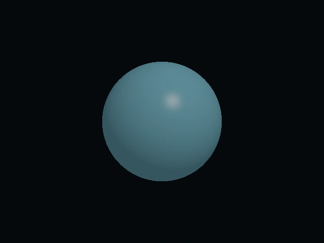
01 · BLINN–PHONG
하프 벡터로 계산하는 하이라이트
빛 방향과 시선 방향의 중간 벡터 H를 사용합니다. N·H와 지수 값으로 반사광의 범위를 조절합니다.
GAME CLIENT PORTFOLIO
박신우 Park Shin Woo
PROJECT INDEX
Unreal Engine 5 · C++
Co-op TPS · Zombie Survival
OpenGL · GLSL · C++
라이팅, 셰이더, GI와 LOD 실험
C++ · OpenGL · WinSock
TCP/IP 멀티플레이
Unity 6 · C# · MCP
1 vs 1 전략 플릭 보드게임
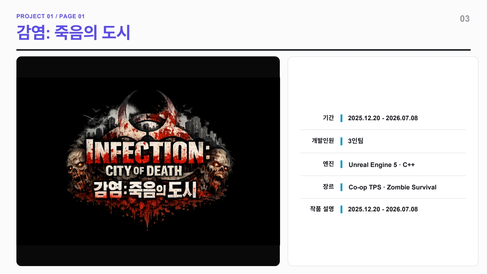
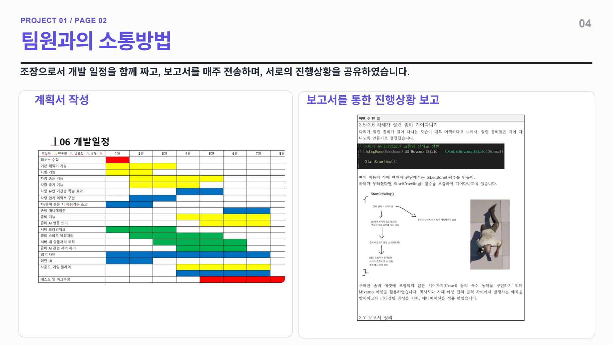
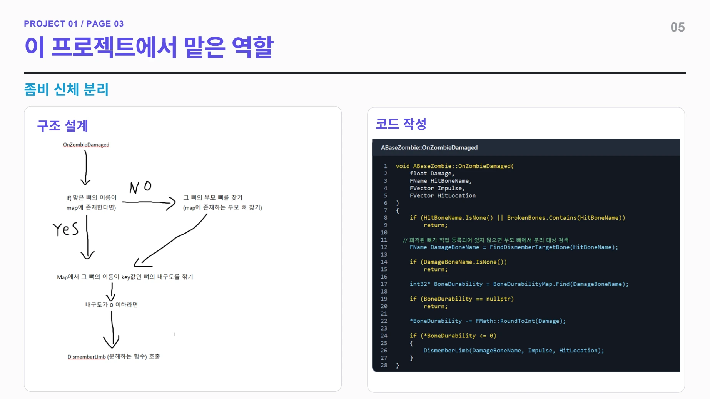
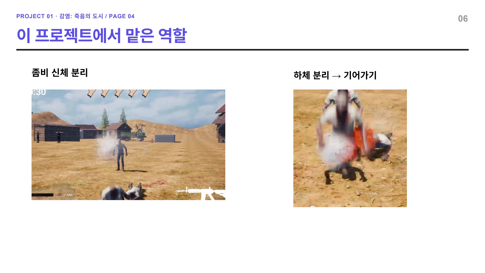
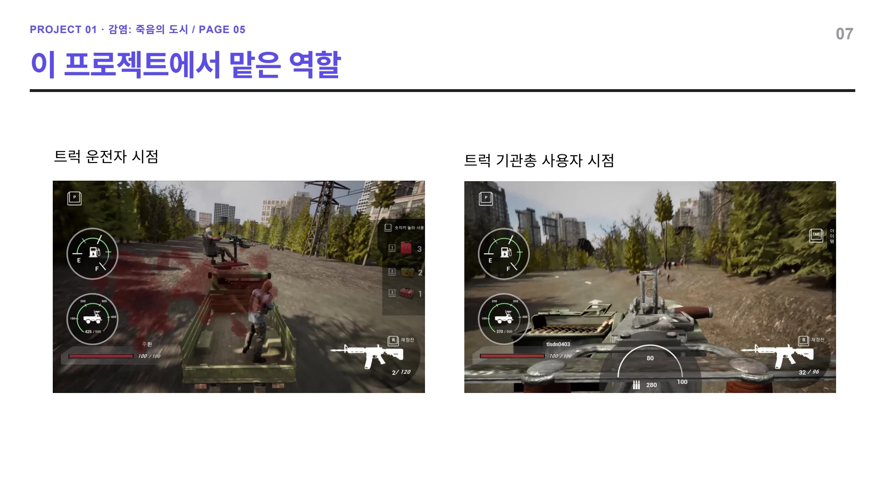
SHADER LAB / 01 · PROJECT OVERVIEW
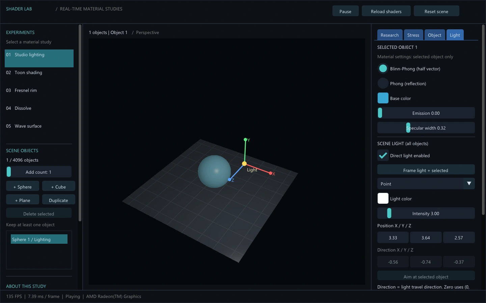
셰이더의 수식과 그래픽스 파이프라인을 이해하기 위해 시작한 학습 프로젝트입니다. 직접 작성한 셰이더의 파라미터를 바꾸고 결과를 비교하며, 코드가 화면에 어떤 변화를 만드는지 확인하는 것을 목표로 했습니다.
라이팅과 표면 표현을 공부하며 셰이더 코드를 직접 작성했습니다. 수식을 적용하는 데서 나아가, 값과 계산 방식을 바꿨을 때의 차이를 실행 화면으로 확인할 수 있는 학습 환경이 필요했습니다.
제한된 개발 시간을 셰이더 학습에 집중하기 위해, UI와 전반적인 Lab 구조 및 실행 환경은 AI를 활용해 제작했습니다. 이를 바탕으로 셰이더를 수정하고 실험하며 그래픽스 원리를 익히는 방식으로 진행했습니다.
SHADER LAB / 02 · MATERIAL STUDIES

빛 방향과 시선 방향의 중간 벡터 H를 사용합니다. N·H와 지수 값으로 반사광의 범위를 조절합니다.
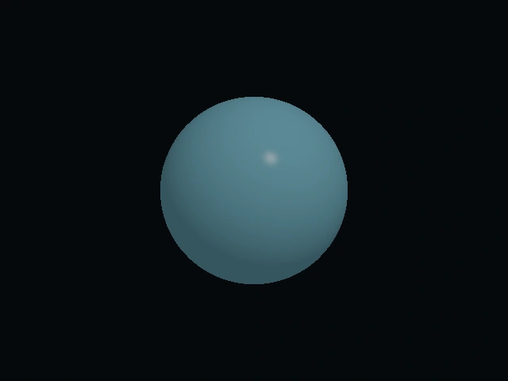
R = 2(N·L)N − L로 반사 방향을 구하고, R·V를 사용해 정반사 성분을 계산합니다.
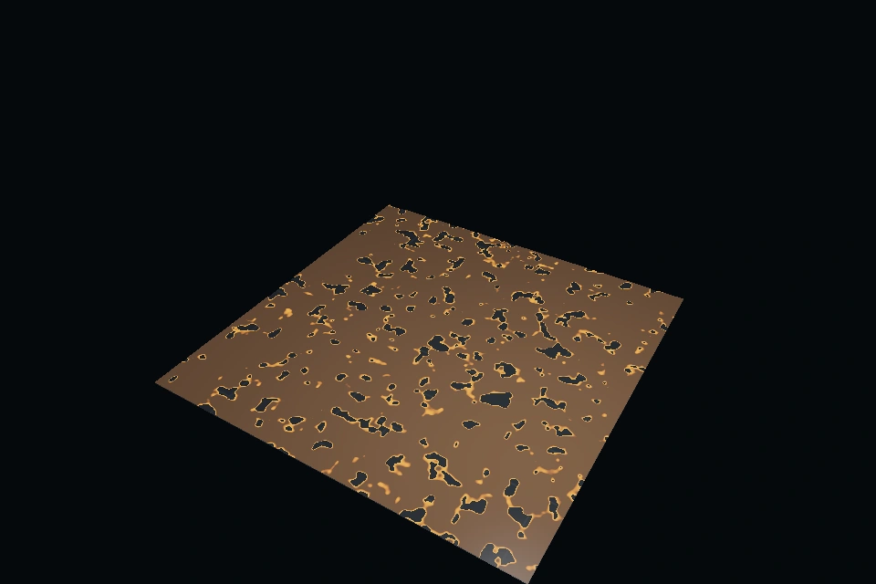
노이즈와 임계값을 비교해 discard합니다. 구멍처럼 보이지만 이 효과가 정점이나 메시를 삭제하지는 않습니다.
Toon조명 밝기를 단계화
Fresnel시선 각도에 따른 가장자리 강조
Wave정점 변위와 법선 보정
SHADER LAB / 03 · INTERACTIVE LIGHT EDITOR
방향광, 점광원, 스폿 광원을 선택합니다. 위치와 방향, 범위, 스폿 각도를 조절해 감쇠의 차이를 비교합니다.
광원의 색·세기와 선택 객체의 Phong / Blinn–Phong, Base color, Emission, Specular, Rim을 Light 탭에서 관리합니다.
구·큐브·평면의 추가, 복제, 삭제와 개별 재질 설정을 지원합니다. 여러 표면에 빛이 어떻게 반응하는지 함께 확인합니다.
광원 설정은 장면 전체에 적용 · 재질 설정은 선택 객체에 적용 · 기즈모 조작 취소 및 광원 프레이밍 지원
SHADER LAB / 04 · INDIRECT LIGHT STUDY
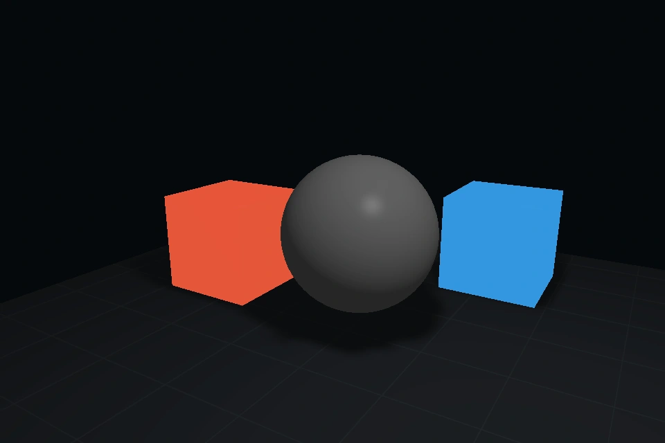
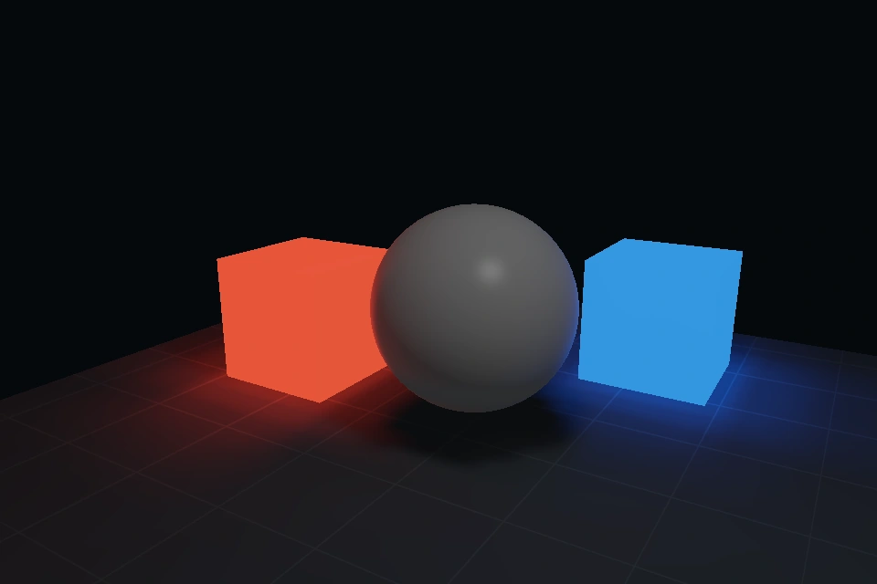
Lumen의 목적 중 동적 간접광을 작은 실험으로 다룹니다. 고정 범위의 해석적 도형 복셀화와 단일 바운스 근사이며, Lumen의 Surface Cache·하드웨어 레이 트레이싱·시간적 누적은 구현하지 않았습니다.
SHADER LAB / 05 · STRESS TEST
화면 속 통계로 확인하는 LOD·컬링 OFF / ON 비교 · 카메라 거리 63, 32열 격자와 간격 3 고정
CPU 2.47 ms · GPU 6.12 ms
CPU 2.26 ms · GPU 0.14 ms
CPU 0.22 ms · GPU 0.64 ms
CPU 0.26 ms · GPU 0.05 ms
CPU 8.85 ms · GPU 27.60 ms
CPU 9.12 ms · GPU 0.18 ms
객체 수는 그대로 두고 제출 기하를 줄입니다. CPU 제출 비용과 GPU 시간을 함께 확인하며, 한 수치의 개선을 전체 프레임 성능과 구분합니다. HTML에서는 캡처를 클릭하면 확대됩니다.
별도 측정 창 · Ryzen 7 6800H / AMD Radeon(TM) Graphics · MSVC /O2 · 장면 900×720 + 통계 UI, 창 1280×720
CPU submit = Render 호출 경과 시간(드라이버 대기 포함 가능), Scene GPU = GPU timestamp · Frame = UI·swap·GPU 완료 대기를 포함한 반복 시간
예열 30 + 측정 180프레임 중앙값 · Bench FPS = 1000 / Frame 중앙값, 에디터 FPS가 아님 · VSync·GI·그림자·애니메이션 OFF · 2026.10.21
SHADER LAB / 06 · DISTANCE & MESH DETAIL
상단: 동일한 구 1,000개 장면의 카메라 거리 변경 · LOD와 컬링 ON, LOD error 2 px
CPU 2.37 ms · GPU 0.17 ms
CPU 2.22 ms · GPU 0.14 ms
CPU 2.36 ms · GPU 0.14 ms
멀어질수록 낮은 LOD가 선택되지만 더 많은 객체가 시야에 들어옵니다. 따라서 거리 증가가 전체 삼각형 수나 프레임 시간의 감소를 보장하지는 않습니다.
하단: 구 하나의 와이어프레임 · 왼쪽 아래는 같은 렌더 결과의 확대 보기
CPU 0.02 ms · GPU 0.09 ms
CPU 0.01 ms · GPU 0.04 ms
CPU 0.01 ms · GPU 0.03 ms
4,096 → 1,024 → 255 삼각형으로 메시 밀도가 줄어드는 모습을 확인할 수 있습니다. 와이어프레임은 구조 확인용이며, 상단의 일반 렌더링과 성능을 직접 비교하지 않습니다.
별도 측정 창 · Ryzen 7 6800H / AMD Radeon(TM) Graphics · MSVC /O2 · 장면 900×720 + 통계 UI, 창 1280×720
CPU submit = Render 호출 경과 시간(드라이버 대기 포함 가능), Scene GPU = GPU timestamp · Frame = UI·swap·GPU 완료 대기를 포함한 반복 시간
예열 30 + 측정 180프레임 중앙값 · Bench FPS = 1000 / Frame 중앙값, 에디터 FPS가 아님 · VSync·GI·그림자·애니메이션 OFF · 2026.10.21
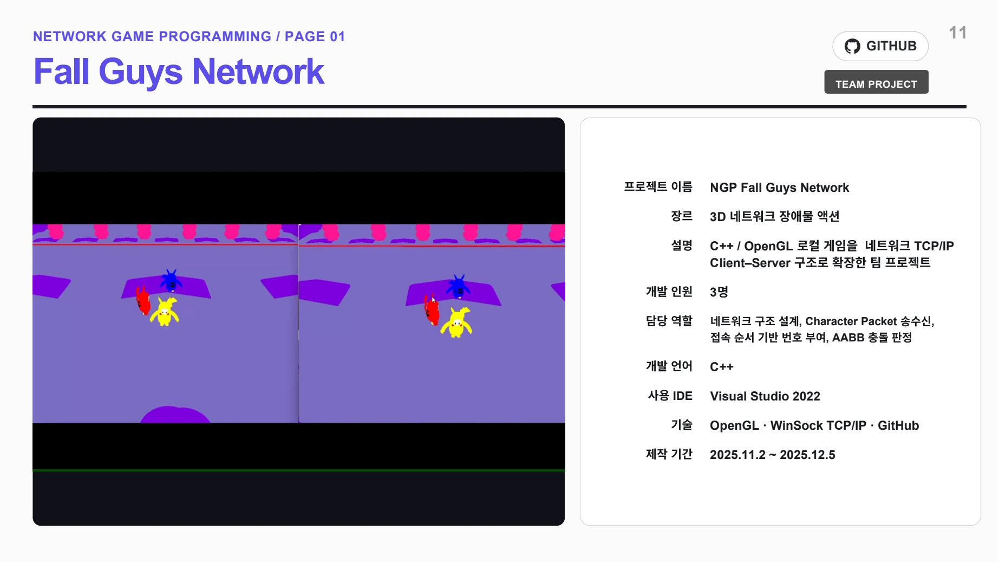
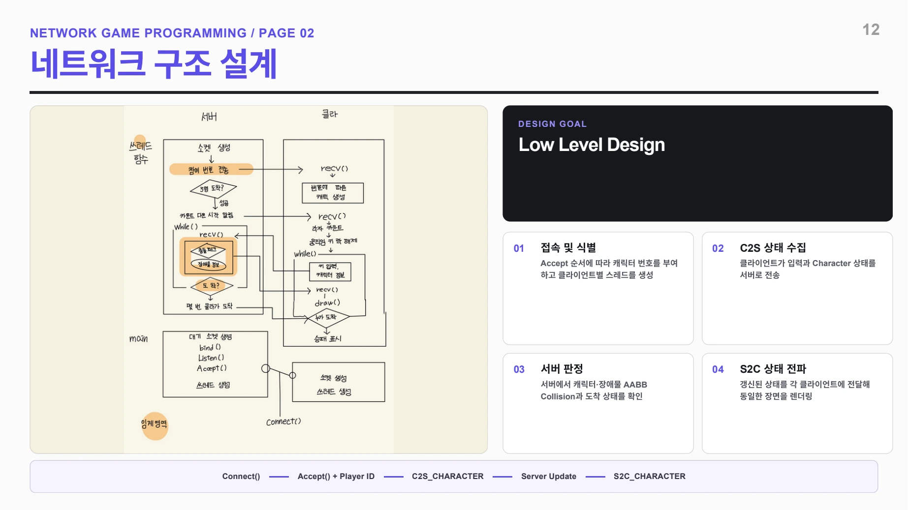
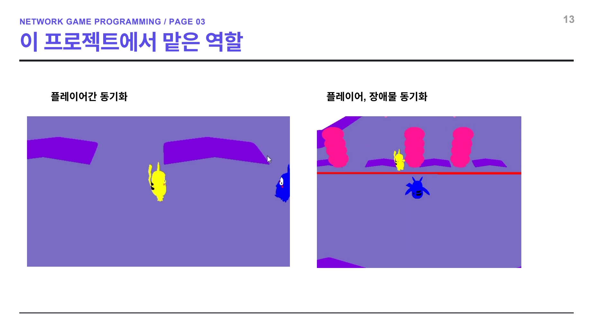
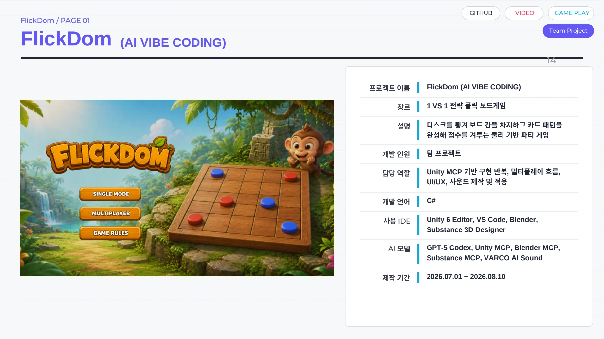
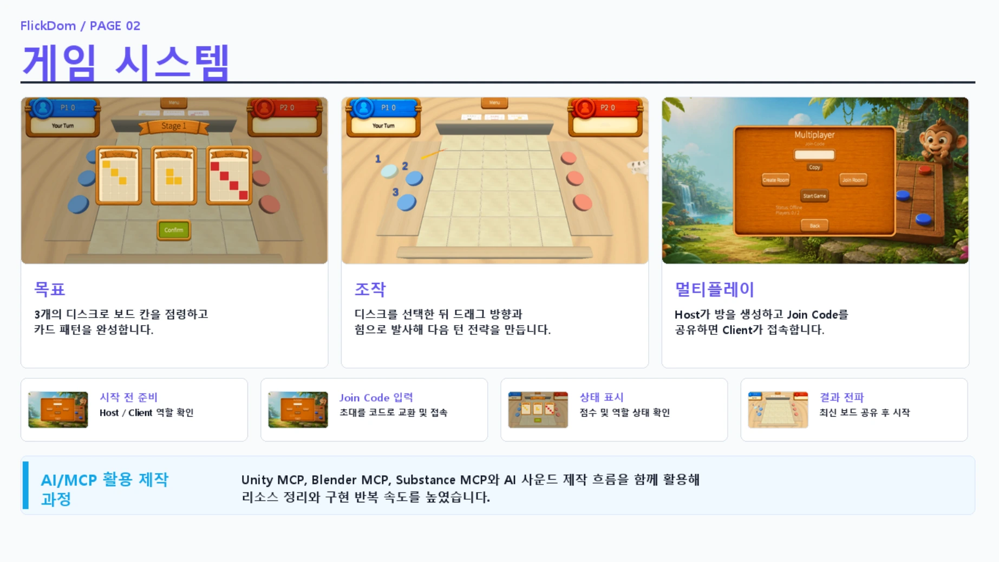
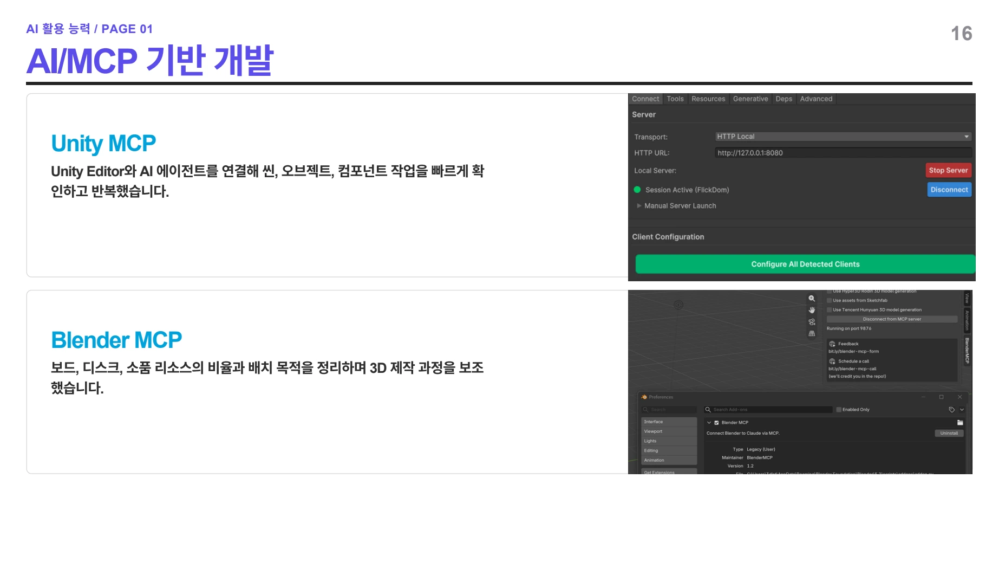
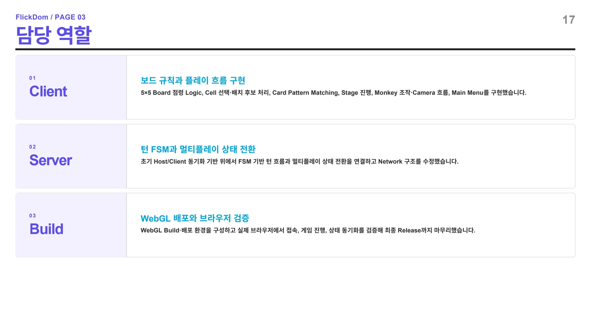
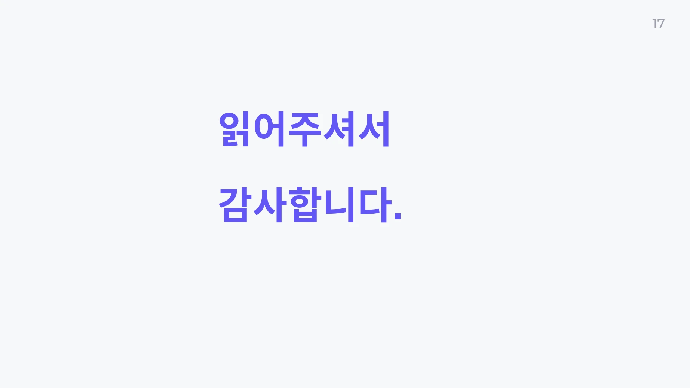